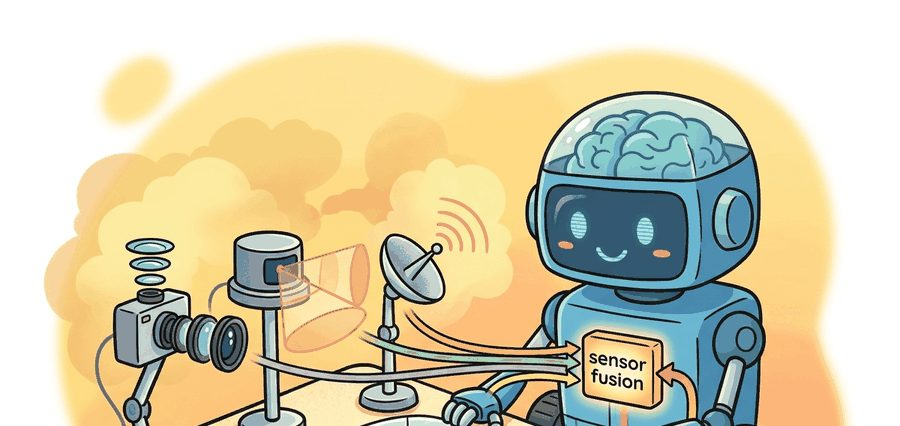
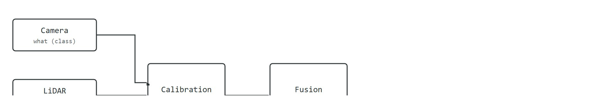

An autonomous vehicle sees the world through three sensors that disagree and one fusion algorithm that must not.
On the perception stack

This section assumes familiarity with coordinate frames and rigid-body transforms from section 4.6, and with the basics of 3D point-cloud representation from section 28.2. The calibration concepts introduced here are extended in section 8.5, which covers sensor synchronization and state estimation in depth. The fused detections produced by this pipeline feed directly into the tracking and prediction methods developed in section 48.3.
At highway speed in a rainstorm, a camera goes partially blind, a LiDAR point cloud turns to noise, and only the radar still locks onto the truck fifty meters ahead. No single sensor is enough, and the cost of that inadequacy is measured in lives. Sensor fusion is therefore not an optimisation trick; it is the foundational design constraint of every deployed autonomous vehicle today. Here you will calibrate a camera-LiDAR rig to a shared coordinate frame, build a late-fusion pipeline that combines sparse geometry with dense color, and evaluate the result against a 3D benchmark, gaining hands-on command of the perception layer that every downstream planner depends on.
Point three sensors at the same pedestrian and they hand you three different answers about where that person stands. The perception stack exists to decide which disagreement is signal and which is a calibration bug, because camera, LiDAR, and radar each measure a different physical quantity, and fusion makes their disagreements informative rather than dangerous. This section develops the perception stack as a concrete contract: ingest synchronized and calibrated sensor streams, produce 3D objects with class, pose, extent, and velocity, and quantify the result against a labeled benchmark. The recurring discipline is calibration. Fusion means something only when every sensor expresses its measurement in a shared coordinate frame (the extrinsic transform, a rotation plus a translation, converts one sensor's coordinates into another's; the intrinsic transform then converts a camera-frame 3D point into pixel coordinates, both defined precisely in the Mechanism box below), and the worked example projects a LiDAR point into the camera image to make that frame transformation explicit. A single degree of extrinsic misalignment, easy to miss on a checkerboard target, silently moves every LiDAR return by nearly a meter at 50 m range. One degree is roughly the angle you would tilt a phone to read it more comfortably, yet at highway distances that tilt places a pedestrian's geometry a full lane-width away from their actual body. Engineers call this the calibration debt problem, and it explains why a freshly trained detector can fail without warning after a sensor swap.
| Modality | Variants and parameters | Strengths | Weaknesses |
|---|---|---|---|
| Camera | monocular, stereo (depth from disparity), fisheye (wide FOV, where FOV is the field of view, the angular extent a lens captures, with strong distortion) | dense texture, color, sign and lane reading | no direct range (mono), poor in low light, glare |
| LiDAR | 64 to 128 beams, 10 to 20 Hz, mechanical or solid-state | accurate 3D geometry, range to ~200 m | sparse at distance, degraded by rain, snow, dust |
| Radar | 77 GHz automotive, FMCW, direct Doppler (the frequency shift of a reflected wave caused by the target's motion, which encodes radial velocity directly) | direct radial velocity, robust to weather and lighting | coarse angular resolution, clutter, multipath |
A sensor suite that measures what, where, and how fast in the same sample is not a luxury; it is the minimum contract a moving vehicle owes the world around it.

Figure 48.2B traces this division of labor end to end: each modality measures one physical quantity, calibration aligns them to a shared frame and clock, and only then does fusion emit unified 3D objects. Radar's direct Doppler velocity matters in embodied AI because a physical robot cannot afford the latency of a tracking filter that estimates velocity by differencing two successive position estimates (see the tracking filter). At highway speed, a single missed frame turns a plausible tracker state into a dangerous one. A sensor that measures velocity in the same sample it measures range typically removes most of that lag. That is why radar is difficult to substitute for in safety-critical loops.
The mechanism is frequency-modulated continuous-wave (FMCW) transmission: the radio sweeps linearly in frequency, so round-trip travel time shifts the received chirp in time to encode range, while the target's radial velocity Doppler-shifts the carrier frequency. A short-time Fourier transform comparing transmitted and received chirp recovers both range and radial velocity from one measurement, with no tracking history.
Think of FMCW radar like a chef who slides a tray into an oven and listens for the door echo: the delay before the echo returns tells her how far away the back wall is (range), and the pitch shift in the echo tells her whether the tray is still moving or has stopped (Doppler velocity). One slide, two answers, no history needed. FMCW radar does the same thing with radio waves: the frequency sweep is the sliding tray, the round-trip delay gives range, and the carrier frequency shift gives radial velocity, all in a single transmitted chirp.
Because each modality contributes a different piece of the what-where-how-fast picture, the design question is not whether to combine them but at which stage of the pipeline the combination should happen.
Fusion levels differ by where in the pipeline the modalities combine.
So far: fusion can happen at three stages, sensor-level (raw measurements), early/feature-level (learned features inside one network), or late/object-level (independent detectors merged after the fact), trading information richness against calibration sensitivity and modularity. The next section shows what actually consumes whichever fused representation you chose.
Whichever fusion level you choose, the stage that consumes its output is the same: a detector that turns the combined evidence into geometry.
Given fused inputs, a detector outputs oriented 3D boxes. Representative families: PointPillars voxelizes the LiDAR point cloud into vertical pillars and runs a 2D backbone for speed; CenterPoint detects object centers in a bird's-eye-view heatmap and regresses box and velocity; BEVFormer lifts multi-camera features into a shared bird's-eye-view grid using spatial and temporal attention, enabling camera-only or camera-LiDAR detection in one frame.
Every fusion method assumes the extrinsic transform between sensors and the camera intrinsics are known and stable. A 1-degree extrinsic error at 50 m is roughly a 0.9 m lateral error: enough to place a LiDAR return for a pedestrian onto the empty road beside them. Most "fusion failures" are calibration or time-synchronization failures in disguise.
To express a LiDAR point in the camera image you chain three transforms. The extrinsic matrix $T_{\text{cam}\leftarrow\text{lidar}}$ (a 4x4 rotation plus translation) moves the point from the LiDAR frame to the camera frame; the intrinsic matrix $K$ (focal lengths $f_x, f_y$ and principal point $c_x, c_y$) projects the 3D camera-frame point to pixel coordinates; finally you divide by depth (the perspective division). Points behind the camera ($z \le 0$) must be discarded before division.
Input: LiDAR point $\mathbf{p}_L = (x, y, z)^\top$ in the LiDAR frame; extrinsic rotation $R \in \mathbb{R}^{3 \times 3}$ and translation $\mathbf{t} \in \mathbb{R}^3$ mapping LiDAR to camera frame; camera intrinsic matrix $K$ with focal lengths $(f_x, f_y)$ and principal point $(c_x, c_y)$; distortion tolerance $\theta_{\max}$.
Output: Pixel coordinate $(u, v)$ of the projected point, or $\varnothing$ if the point is behind or outside the image plane.
Before reading the code below, trace it mentally: given only a rotation matrix, a translation vector, and a focal length, how many scalar multiplications stand between you and a pedestrian's pixel position? The answer shapes how fast a fusion pipeline can run on embedded hardware.
The example projects a LiDAR point $(x, y, z)$ into a camera image using the calibration matrices, the single most common operation in any fusion pipeline.
import numpy as np
# Camera intrinsics K (3x3): focal lengths and principal point in pixels.
K = np.array([[1200.0, 0.0, 960.0],
[ 0.0, 1200.0, 540.0],
[ 0.0, 0.0, 1.0]])
# Extrinsic: rotation R (3x3) and translation t (3,) mapping LiDAR -> camera frame.
# Here the camera looks forward; LiDAR is mounted 0.3 m above and 1.6 m behind it.
R = np.array([[ 0.0, -1.0, 0.0], # LiDAR x (forward) -> camera z
[ 0.0, 0.0, -1.0], # LiDAR z (up) -> -camera y
[ 1.0, 0.0, 0.0]]) # LiDAR y (left) -> camera x
t = np.array([0.0, 0.3, -1.6])
def project_lidar_to_image(point_lidar, R, t, K):
"""Project a LiDAR point (x, y, z) to pixel (u, v); return None if behind camera."""
p_cam = R @ np.asarray(point_lidar, dtype=float) + t # camera-frame 3D point
if p_cam[2] <= 1e-6: # behind the image plane
return None
uvw = K @ p_cam # apply intrinsics
u, v = uvw[0] / uvw[2], uvw[1] / uvw[2] # perspective division
return float(u), float(v)
# A LiDAR return 20 m ahead, 1 m to the left, at ground-ish height.
pt = (20.0, 1.0, -0.5)
pix = project_lidar_to_image(pt, R, t, K)
print("pixel (u, v):", None if pix is None else (round(pix[0], 1), round(pix[1], 1)))None when the point lies behind the image plane.Expected output: a pixel coordinate near the image center-left, around (u, v) = (894.8, 592.2). Swap in a point with LiDAR-forward distance set negative and the function returns None, the guard that prevents projecting points behind the camera onto the image.
Trace the worked-example numbers by hand for the point $\mathbf{p}_L = (20.0,\ 1.0,\ -0.5)$, with the same $R$, $t$, and $K$ as the code.
Step 1, rotate and translate ($\mathbf{p}_C = R\,\mathbf{p}_L + t$). Row by row: $X_c = (0)(20) + (-1)(1) + (0)(-0.5) + 0 = -1.0$; $Y_c = (0)(20) + (0)(1) + (-1)(-0.5) + 0.3 = 0.5 + 0.3 = 0.8$; $Z_c = (1)(20) + (0)(1) + (0)(-0.5) + (-1.6) = 20 - 1.6 = 18.4$. So $\mathbf{p}_C = (-1.0,\ 0.8,\ 18.4)$.
Step 2, validity check. $Z_c = 18.4 > 0$, so the point is in front of the camera. Keep it.
Step 3, apply intrinsics ($K\,\mathbf{p}_C$). $u' = 1200(-1.0) + 0(0.8) + 960(18.4) = -1200 + 17664 = 16464$; $v' = 1200(0.8) + 540(18.4) = 960 + 9936 = 10896$; $w' = Z_c = 18.4$.
Step 4, perspective division. $u = 16464 / 18.4 \approx 894.8$, $v = 10896 / 18.4 \approx 592.2$. The pixel is $(894.8,\ 592.2)$, just left of and slightly below the principal point $(960, 540)$, exactly the center-left position the code prints. Now flip the LiDAR-forward distance to $-20.0$: Step 1 gives $Z_c = -20 - 1.6 = -21.6 \le 0$, so Step 2 returns $\varnothing$ and nothing reaches the image.
Waymo's fifth-generation Driver runs exactly this projection at scale: it cross-calibrates 29 cameras, five LiDARs, and six radars into one vehicle frame, then projects LiDAR returns into camera images to fuse geometry with semantics for every detected agent. The same one-degree extrinsic discipline from this section is enforced continuously, because the fleet logs photometric reprojection error per frame to catch calibration drift from road vibration before it reaches the planner.
The pinhole projection above (K @ p_cam) is correct only for rectilinear lenses. For the fisheye cameras that appear in the sensor table, use cv2.fisheye.projectPoints with the four-parameter distortion vector D stored in your calibration file; applying the pinhole formula to a fisheye image silently misplaces LiDAR returns near the frame edges by tens of pixels, which is undetectable on center objects but produces meter-scale lateral errors for pedestrians in the peripheral field of view. Check your calibration file for a non-zero D[3] (the tangential term) as a quick test of whether the pinhole model is safe to use.
In practice use the dataset SDKs that ship calibrated transforms: the nuScenes devkit and the Waymo Open Dataset tools expose per-sensor intrinsics and extrinsics and handle ego-motion compensation. For detectors, MMDetection3D and OpenPCDet provide reference PointPillars, CenterPoint, and BEVFormer implementations. Keep the same projection convention (frame order, distortion model) across your pipeline.
A common assumption is that adding more sensor modalities always improves detection quality, treating fusion as a free performance boost. In embodied AI this is wrong: each additional sensor introduces an extrinsic transform, a timing offset, and a failure mode, and if any of these is incorrect the fused output is worse than a single clean modality alone. A LiDAR point misaligned by even one degree places a pedestrian's geometry onto empty road, causing a fused detector to suppress the camera-only detection rather than reinforce it. The correct mental model is that fusion multiplies perception quality only after calibration and synchronization are verified; until then, per-modality detectors run in isolation and fusion is guarded by explicit sanity checks on the projected overlays.
A small clock skew between camera and LiDAR makes a fast crossing pedestrian appear smeared or doubled after fusion. The detector confidence drops, the tracker stutters, and the planner over-brakes. Always log the per-frame time skew; it is the first thing to check when fused detections degrade only for fast objects.
A team adding radar to a camera-LiDAR stack should fuse radar Doppler at the object level first: associate radar tracks to detected boxes and use radial velocity to disambiguate stopped versus creeping vehicles. This recovers velocity in heavy rain where LiDAR returns thin out, without rebuilding the detector.
Camera knows what, LiDAR knows where, radar knows how fast. Fusion's job is to keep all three answers about the same object.
Late fusion is the right starting point when sensors are added incrementally or when the two modalities have independent failure modes you want to isolate: if the camera detector fails in a tunnel, the radar tracker still runs and the failure is visible in logs. Sensor-level fusion becomes worth the added calibration risk once the per-modality detectors are saturating on easy cases and the remaining errors (distant pedestrians, partial occlusions) require joint evidence that only exists before any detection threshold is applied. Early feature-level fusion, as in BEVFormer, is appropriate when the task demands temporal reasoning across frames, because the network can learn to integrate motion cues across the two streams in a way that a late-fusion rule cannot. A practical decision rule: if your per-modality mAP is below 60, fix the individual detectors first; fusion cannot recover fundamentally bad sensor signal.
Foundation models for sensor fusion. Large vision-language models are being adapted as perception backbones that share weights across cameras, LiDAR, and radar without modality-specific heads. DriveLM (Sima et al., NeurIPS 2024) treats the scene as a question-answering graph over sensor tokens, achieving competitive 3D detection while also producing natural-language explanations of detections, a property that narrows the gap between AV perception and interpretability requirements.
Sparse radar-camera fusion at long range. 4D imaging radar (range, azimuth, elevation, Doppler) at 77-79 GHz is replacing traditional sparse 2D radar in production vehicles. SparseFusion4D (Mao et al., CVPR 2024) fuses 4D radar point clouds with camera features in a deformable-attention BEV grid, recovering velocity and occupancy at 150+ meters in rain where LiDAR point-cloud density degrades by up to 60 percent under heavy precipitation (as reported in controlled weather benchmarks, circa 2023-2024), with no LiDAR required at inference.
Self-supervised calibration from ego-motion. NeRF-Cal and its 2025 successors (e.g., CalibNeRF from the Waymo Research team) estimate intrinsic and extrinsic parameters directly from unlabeled driving sequences by optimizing a neural radiance field to minimize photometric error across views, removing the need for physical calibration targets and detecting millimeter-scale extrinsic drift that develops over thousands of kilometers of road vibration.
Open problem for PhD students. All three directions above assume that sensor placement is fixed and known at training time. When a vehicle swaps a sensor unit in the field (a common fleet maintenance event), the learned fusion weights are mismatched to the new extrinsic transform for the first hours until self-supervised recalibration converges. Designing a fusion architecture that adapts online to unknown extrinsic perturbations without degrading safety margins during the adaptation window is an open and practically urgent problem.
Can you state, for a single LiDAR point, the two matrices and the one division needed to place it in the image, and the condition under which the projection is invalid? If not, revisit the mechanism box before fusing modalities.
| Tool or Library | Role in the Topic | Builder Advice |
|---|---|---|
| nuScenes devkit, Waymo Open Dataset tools | Calibrated multi-sensor data and transforms | Use their extrinsics rather than re-deriving frames by hand. |
| MMDetection3D, OpenPCDet | Reference 3D detectors (PointPillars, CenterPoint, BEVFormer) | Reproduce a published number before customizing. |
| Projection overlay script | Visual calibration audit | Overlay LiDAR on camera every release to catch extrinsic drift. |
Beginner (weekend): LiDAR-camera overlay visualizer. Build a Python script using the nuScenes devkit and OpenCV that loads a calibrated frame, projects the LiDAR point cloud onto the camera image, and colors each point by depth; the key challenge is correctly chaining the extrinsic rotation and translation before applying the intrinsic matrix so that returns at the frame edges land on the right pixels rather than drifting by tens of pixels due to a wrong axis convention. Intermediate (1-2 weeks): late-fusion 3D object detector with Doppler velocity. Using the nuScenes devkit and OpenPCDet, run a PointPillars camera detector and a separate radar tracker, associate their outputs with a greedy Intersection over Union (IoU) match in bird's-eye view, and use the radar Doppler reading to fill in velocity for boxes where the LiDAR-only estimate is noisy; the key challenge is handling the radar's coarse angular resolution so that a single radar return confidently matches one camera box rather than two adjacent ones. Intermediate (1-2 weeks): calibration-drift stress tester in a ROS2 simulation. In a Gazebo or CARLA ROS2 environment, deliberately perturb the extrinsic transform between a simulated camera and LiDAR by increments from 0.5 to 5 degrees, rerun a reference CenterPoint detector from MMDetection3D on each perturbed calibration, and plot mAP against angular error to empirically verify the 0.9 m lateral-error rule from the section; the key challenge is automating the calibration injection into the ROS2 TF tree without restarting the simulation.
Section 48.1 frames perception inside the full loop, 48.3 consumes these detections for tracking and prediction, and 48.5 explores learned representations that fuse and predict jointly.
Perturb the extrinsic rotation in the worked example by 1 degree and re-project a point at 50 m. Measure the pixel shift, convert it back to a ground-plane lateral error, and label whether it would move a pedestrian off the sidewalk.
Lang et al., "PointPillars: Fast Encoders for Object Detection from Point Clouds," CVPR 2019. Yin et al., "Center-based 3D Object Detection and Tracking" (CenterPoint), CVPR 2021. Li et al., "BEVFormer: Learning Bird's-Eye-View Representation from Multi-Camera Images," ECCV 2022.
These define the detector families and the bird's-eye-view fusion paradigm referenced above.
Three modalities disagree by design; fusion turns that disagreement into a more complete and robust scene, but only when calibration and time synchronization are correct. Master the LiDAR-to-camera projection first, because every fusion method depends on it.
Extend the projection function to handle a batch of LiDAR points and to color each surviving pixel by depth. Then design a same-panel experiment comparing late fusion (merge two detector outputs) against the painted-point sensor-level approach on identical frames, measuring mAP and the false-negative rate for pedestrians.